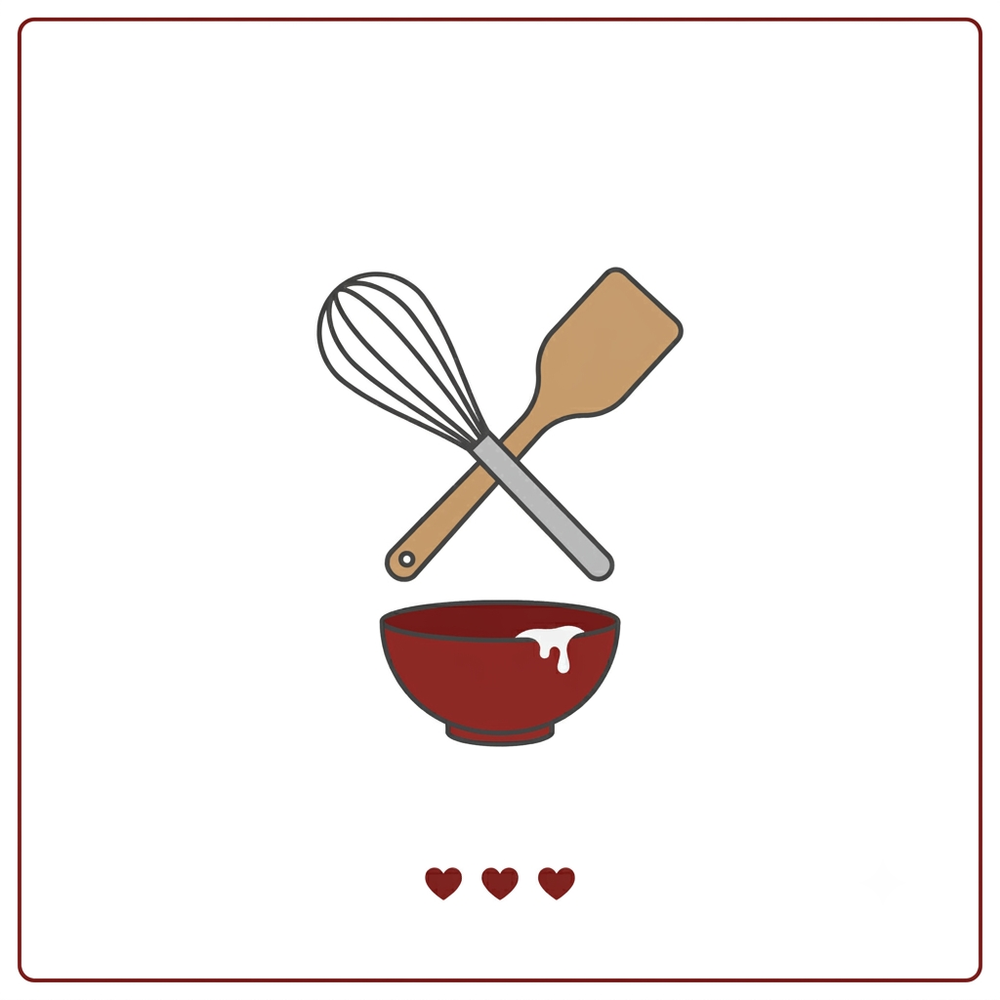

Bolo de Chocolate Simples e Fofinho
Por: Bianca Vitória Ribeiro Vidal
Boas-vindas ao meu novo blog! Hoje vou compartilhar uma receita incrível de bolo de chocolate que fica superfofinho e perfeito para o café da tarde.
Vou compartilhar sobre as minhas receitas favoritas e dicas culinárias deliciosas!

Por: Bianca Vitória Ribeiro Vidal
Boas-vindas ao meu novo blog! Hoje vou compartilhar uma receita incrível de bolo de chocolate que fica superfofinho e perfeito para o café da tarde.
Por: Bianca Vitória Ribeiro Vidal
Nesta segunda publicação, trago o passo a passo de uma torta salgada de liquidificador rápida, prática e muito recheada para o seu almoço.